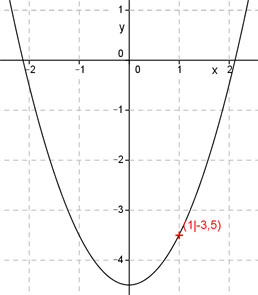

Aufgabe 15 Liegt der Punkt (1|-3,5) auf dem Graphen der Funktion y = x2 - 4,5? Punkt (1|-3,5) bedeutet, x = 1 und y = -3,5. In y = x2 - 4,5 eingesetzt: -3,5 = 1 – 4,5 -3,5 = -3,5 Dies ist eine wahre Aussage, somit liegt der Punkt auf dem Graphen. 